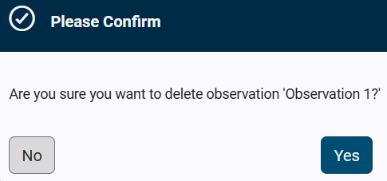

Selecting the Observations button on the assessment screen displays the Observations section. Users can record observations to provide context for questions with a "No" or "Not" response. Observation records include a description of the issue, its potential impacts, recommendations for rectifying the issue, and potential vulnerabilities.
 Observations-
The Observations section displays the following information for any previously added observations: -
-
-
-
-
A red dot is displayed on the Observation button when a question/requirement has an attached observation. -
|
 Add an Observation-
Select the Add an Observation button to open the Observation Details window and create an observation.
|
 Edit-
Select the Edit button to open the Observation Details window and open the previously created observation.
|
 Delete-
Select the delete button to remove the observation. -
A Please Confirm dialog box displays the following message:  -
Select the Yes button to remove the observation. -
Select the No button to keep the observation and close the dialog box.
|
Made by Dr.Explain, documentation tool
|